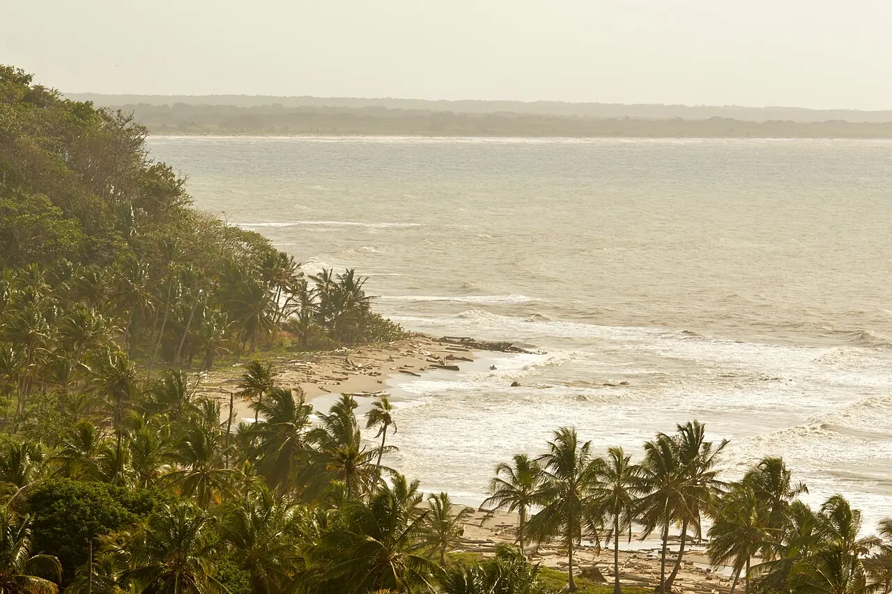
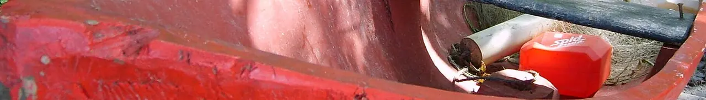
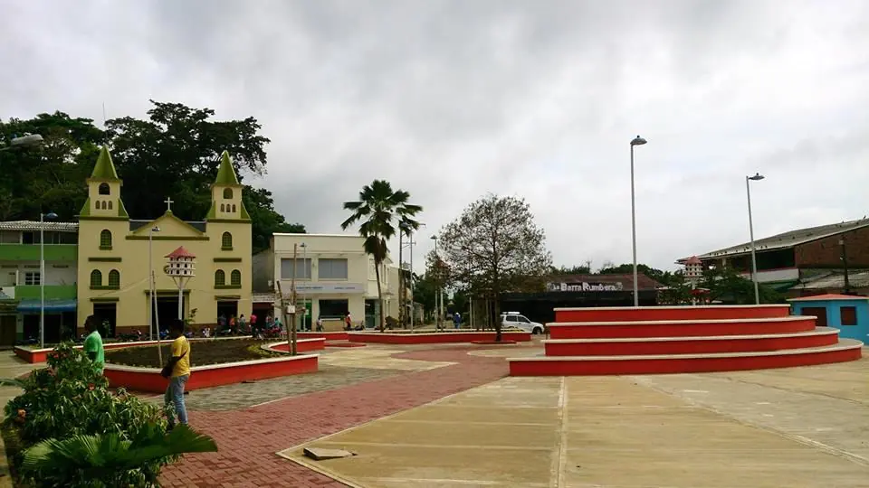

Town beaches
Discover the waterfront and check sea conditions.
Find on the map ↗Urabá · Antioquia, Colombia
Coastal scenery, heritage and flavours in Antioquia’s Urabá region.
What to see ↗Discover its history ↓
Do you have a business in Necoclí? Leave your details to take part ↗
Discover the destination
Necoclí’s history brings together Indigenous roots and Caribbean life. Fishing, crafts and a relationship with the sea shape its identity alongside communities preserving their own knowledge.

Ideas for your visit
Choose the places that spark your curiosity and plan your route at your own pace.
Discover the waterfront and check sea conditions.
Find on the map ↗
02Explore the centre and its meeting places.
Find on the map ↗A village offering another part of the municipality’s coastline.
Find on the map ↗Connect the parts of your trip
Find how to get around, where to stay and eat, things to do and the services you need. Explore at your own pace.
There are no places published in this directory yet.
Locate the places you want to visit and check their opening hours, entry conditions and accessibility before planning your route.
Find Necoclí on the map ↗There are no upcoming events published.
Organising an event? Let’s talk ↗Join Explorando Lugares
Be part of it.
Whether you run a hotel, restaurant, bar or shop, provide transport or organise tours and activities, we would like to hear about your business.
Leave your contact details. We will get in touch to discuss featuring your business on the portal.
I want to take part ↗